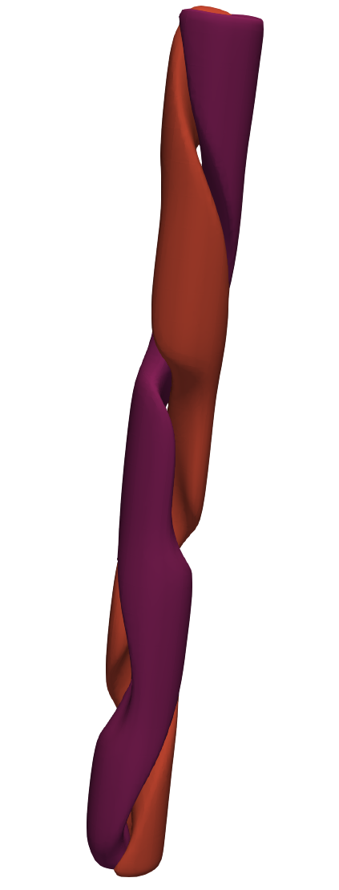

Data types and IO
Import general modules
mpi4py is always required when using these tools. Numpy is always good to have if any manipulation is to be done.
[99]:
# Import required modules
from mpi4py import MPI #equivalent to the use of MPI_init() in C
import matplotlib.pyplot as plt
import numpy as np
# Get mpi info
comm = MPI.COMM_WORLD
Import modules from pysemtools
In this case we will import all the data types that we currently support, as well as io functions that are required to populate them.
[100]:
# Data types
from pysemtools.datatypes.msh import Mesh
from pysemtools.datatypes.coef import Coef
from pysemtools.datatypes.field import Field, FieldRegistry
# Readers
from pysemtools.io.ppymech.neksuite import preadnek, pynekread
# Writers
from pysemtools.io.ppymech.neksuite import pwritenek, pynekwrite
fname_2d = '../data/mixlay0.f00001'
fname_3d = '../data/rbc0.f00001'
Mesh
The mesh object is designed to interact with the coordinates of the SEM domain. It goes without saying then, that if a file is used to initialize the object, it must contain the mesh.
Initializing
The mesh object can be initialized in multiple manners that we have ideantified to be typical when post processing data, here we show some of them.
Initializing an empty object
We can initialize an empty mesh object by just providing the communicator.
Note that at this stage we must indicate if we want to find the connectivity of the points. This is important if later one whishes to average points at element interfaces. Be carefull, however, as it will require more memory.
[101]:
msh_2d = Mesh(comm)
msh_3d = Mesh(comm)
Initializing from a file
The standard way to initialize the data in a mesh object requires that an empty object is initialized and the the pynekread function is called. This function will take the empty object and read only the data containing the mesh.
One must give the name and the empty object that will hold the data. Aditionally, the type of the data is an input.
[102]:
pynekread(fname_2d, comm, data_dtype=np.double, msh=msh_2d)
pynekread(fname_3d, comm, data_dtype=np.single, msh=msh_3d)
2026-03-04 15:58:14,031 pynekread INFO Reading file: ../data/mixlay0.f00001
2026-03-04 15:58:14,040 Mesh INFO Mesh object initialized from coordinates with type: float64 - Elapsed time: 0.005635906000065916s
2026-03-04 15:58:14,041 pynekread INFO File successfully read - Elapsed time: 0.010121335000008003s
2026-03-04 15:58:14,041 pynekread INFO Reading file: ../data/rbc0.f00001
2026-03-04 15:58:14,061 Mesh INFO Mesh object initialized from coordinates with type: float32 - Elapsed time: 0.015129852999962168s
2026-03-04 15:58:14,062 pynekread INFO File successfully read - Elapsed time: 0.020931777999976475s
Initializing from a hexadata object.
We have previously use the module pymech to post process data. Because of this we wrote io routines that produce objects of this type, in case some existing workflows already rely on that. We note that this is parallel and each rank will have a hexadata object with a portion of the total data.
Note that in our implementation, the hexadata object will always read the full file.
In general, this should not be the main way to initialize objects. But we give the option.
The steps that we follow to initialize are the following:
Read the hexadata object.
Initialize the mesh object from it
[103]:
# 1.
data_2d = preadnek(fname_2d, comm, data_dtype=np.double)
data_3d = preadnek(fname_3d, comm, data_dtype=np.single)
# 2.
msh_2d = Mesh(comm, data=data_2d)
msh_3d = Mesh(comm, data=data_3d)
2026-03-04 15:58:14,072 preadnek INFO Reading file: ../data/mixlay0.f00001
2026-03-04 15:58:14,253 preadnek INFO Elapsed time: 0.18158228199990845s
2026-03-04 15:58:14,261 preadnek INFO Reading file: ../data/rbc0.f00001
2026-03-04 15:58:14,291 preadnek INFO Elapsed time: 0.02974485899994761s
2026-03-04 15:58:14,294 Mesh INFO Initializing Mesh object from HexaData object.
2026-03-04 15:58:14,306 Mesh INFO Mesh object initialized.
2026-03-04 15:58:14,306 Mesh INFO Mesh data is of type: float64
2026-03-04 15:58:14,307 Mesh INFO Elapsed time: 0.013255767000032392s
2026-03-04 15:58:14,308 Mesh INFO Initializing Mesh object from HexaData object.
2026-03-04 15:58:14,323 Mesh INFO Mesh object initialized.
2026-03-04 15:58:14,323 Mesh INFO Mesh data is of type: float32
2026-03-04 15:58:14,324 Mesh INFO Elapsed time: 0.016095315999905324s
Initializing from an ndarray
In some instances, one might create the SEM coordinates directly in python. If that is the case, starting directly from the coordinates as an array is also a possibility. One would first create an empty object and the initialize from coordinates as follow:
[104]:
# 1.Copy the coordinates from before just to show
x = msh_3d.x.copy().astype(np.float64)
y = msh_3d.y.copy().astype(np.float64)
z = msh_3d.z.copy().astype(np.float64)
# 2.Initialize a new mesh object
msh_3d_sub = Mesh(comm)
msh_3d_sub.init_from_coords(comm, x=x, y=y, z=z)
2026-03-04 15:58:14,351 Mesh INFO Mesh object initialized from coordinates with type: float64 - Elapsed time: 0.017054289000043354s
In this case, just to show a simple manipulation, we casted the arrays from single to double precision
Coef
The coef object holds the jacobian matrix components, mass matrix and routines to perform derivatives and integrals in the SEM mesh. It is always initialized from a mesh object.
One aditional option for 3D meshes is to also obtain integration weights for the area of the facets in the SEM mesh. If you do not need it, do not activate it, as this takes some extra time and requires extra memory.
The data type of the coef object attributes will match the type of the mesh object.
[105]:
coef_2d = Coef(msh_2d, comm)
coef_3d = Coef(msh_3d, comm)
2026-03-04 15:58:14,360 Coef INFO Initializing Coef object
2026-03-04 15:58:14,361 Coef INFO Getting derivative matrices
2026-03-04 15:58:14,364 Coef INFO Calculating the components of the jacobian
2026-03-04 15:58:14,369 Coef INFO Calculating the jacobian determinant and inverse of the jacobian matrix
2026-03-04 15:58:14,371 Coef INFO Calculating the mass matrix
2026-03-04 15:58:14,372 Coef INFO Coef object initialized
2026-03-04 15:58:14,373 Coef INFO Coef data is of type: float64
2026-03-04 15:58:14,373 Coef INFO Elapsed time: 0.013466366999978163s
2026-03-04 15:58:14,374 Coef INFO Initializing Coef object
2026-03-04 15:58:14,374 Coef INFO Getting derivative matrices
2026-03-04 15:58:14,378 Coef INFO Calculating the components of the jacobian
2026-03-04 15:58:14,389 Coef INFO Calculating the jacobian determinant and inverse of the jacobian matrix
2026-03-04 15:58:14,399 Coef INFO Calculating the mass matrix
2026-03-04 15:58:14,400 Coef INFO Coef object initialized
2026-03-04 15:58:14,400 Coef INFO Coef data is of type: float32
2026-03-04 15:58:14,401 Coef INFO Elapsed time: 0.027133218000017223s
Field
The field object is designed to hold the data from SEM fields in a way that intefacing to a nek5000 binary file is easily achieved.
The initialization can be done in similar ways as the mesh, i.e., by using hexadata and the pynekread routine.
Initializing
Initializing an empty object.
We follow the same procedure to initialize an empty object.
[106]:
fld_2d = Field(comm)
fld_3d = Field(comm)
Initializing from a file
Using the pynekread routine, one can follow the same procedure. In this case, if only the fld file is indicated as input, the mesh in the file will not be read
[107]:
pynekread(fname_2d, comm, data_dtype=np.double, fld=fld_2d)
pynekread(fname_3d, comm, data_dtype=np.single, fld=fld_3d)
2026-03-04 15:58:14,419 pynekread INFO Reading file: ../data/mixlay0.f00001
2026-03-04 15:58:14,423 pynekread INFO File successfully read - Elapsed time: 0.0040701989998979116s
2026-03-04 15:58:14,424 pynekread INFO Reading file: ../data/rbc0.f00001
2026-03-04 15:58:14,429 pynekread INFO File successfully read - Elapsed time: 0.00529200400001173s
Note that you can read both mesh and fields with pynekread if you specify both keywords, i.e, msh= and fld=
Initializing from hexadata
Just as for the mesh, the same interface is valid.
[108]:
# 1.
data_2d = preadnek(fname_2d, comm, data_dtype=np.double)
data_3d = preadnek(fname_3d, comm, data_dtype=np.single)
# 2.
fld_2d = Field(comm, data=data_2d)
fld_3d = Field(comm, data=data_3d)
2026-03-04 15:58:14,444 preadnek INFO Reading file: ../data/mixlay0.f00001
2026-03-04 15:58:14,533 preadnek INFO Elapsed time: 0.08818987199992989s
2026-03-04 15:58:14,537 preadnek INFO Reading file: ../data/rbc0.f00001
2026-03-04 15:58:14,573 preadnek INFO Elapsed time: 0.036531340999999884s
2026-03-04 15:58:14,588 Field INFO Field object initialized from HexaData - Elapsed time: 0.013049441000021034s
2026-03-04 15:58:14,595 Field INFO Field object initialized from HexaData - Elapsed time: 0.005147600999976021s
The field object contains all the information in a subdirectory called fields that is divided into the conventions of a nek5000 binary format.
The keywords are:
[109]:
for key in fld_2d.fields.keys():
print(f'{key} has {len(fld_2d.fields[key])} fields')
print('=================')
for key in fld_3d.fields.keys():
print(f'{key} has {len(fld_3d.fields[key])} fields')
vel has 2 fields
pres has 1 fields
temp has 1 fields
scal has 2 fields
=================
vel has 3 fields
pres has 1 fields
temp has 1 fields
scal has 0 fields
Each keword has a list of fields depending on the contents of the file. Note how the 2 files that we test here have different information.
To access the content of the files, one can do something like this:
[110]:
u = fld_3d.fields['vel'][0]
v = fld_3d.fields['vel'][1]
w = fld_3d.fields['vel'][2]
p = fld_3d.fields['pres'][0]
t = fld_3d.fields['temp'][0]
If one wishes to add new data, it is as simple as appending arrays to any of the keys of the field object. Given that nek5000 readers follow certain logic, it is always safer to add new data to the scalars, unless one wishes to overwrite velocity, pressure, and/or temperature.
For example, we can add the velocity magnitude as a scalar with:
[111]:
mag = np.sqrt(u**2 + v**2 + w**2)
fld_3d.fields['scal'].append(mag)
fld_3d.update_vars()
If one adds new data, it is needed that one calls the update_vars method to update the attributes that keep track of the number of fields in the field object. This is needed, for example, if one wishes to write data to disk.
Writing out data
Writing the data out always needs a mesh and field object, even if one does not wish to write the mesh out.
The procedure is as simple as follows:
[112]:
fname_out = '../data/out_rbc0.f00001'
pynekwrite(fname_out, comm, msh=msh_3d, fld=fld_3d, write_mesh=True, wdsz=4)
2026-03-04 15:58:14,644 pynekwrite INFO Writing file: ../data/out_rbc0.f00001
2026-03-04 15:58:14,656 pynekwrite INFO File written - Elapsed time: 0.012334320000036314s
Field registry
The field registry is a class that extends the field class. We believe this is the class that should be used instead of fields, as it allows to do the same things, but with some extra flexibility.
The methods to initialize it and write data with it are the same. It also contains the fields attribute with a list of the present fields.
It however, has an additional registry attribute that names and points to each field.
[113]:
fld_3d_r = FieldRegistry(comm)
pynekread(fname_3d, comm, data_dtype=np.single, fld=fld_3d_r)
2026-03-04 15:58:14,669 pynekread INFO Reading file: ../data/rbc0.f00001
2026-03-04 15:58:14,675 Field INFO Field registry updated with: ['u', 'v', 'w', 'p', 't'] - dtype: float32
2026-03-04 15:58:14,677 pynekread INFO File successfully read - Elapsed time: 0.007462326999984725s
[114]:
for key in fld_3d_r.registry.keys():
print(f'{key} has {fld_3d_r.registry[key].dtype} dtype')
u has float32 dtype
v has float32 dtype
w has float32 dtype
p has float32 dtype
t has float32 dtype
Note that all the fields that have been adressed as indices in a list have now been assigned names.
Adding new fields
From memory
Adding new fields can now also been done very easy as well. Here we can add a new field named mag that is the velocity magnitude calculated earlier.
This field will be added as an scalar to the fields attribute.
[115]:
fld_3d_r.add_field(comm, field_name='mag', field=mag, dtype=mag.dtype)
print(f'Field mag added to registry and fields directory in pos {fld_3d_r.registry_pos["mag"]}')
Field mag added to registry and fields directory in pos scal_0
From disk
You can also just read one field from a file, which reduces the memory footprint.
The procesude is shown below, note that here we know that we have written the field mag as an scalar.
[116]:
fld_3d_r.add_field(comm, field_name='mag_r', file_name=fname_out, file_type='fld', file_key='scal_0', dtype=mag.dtype)
print(f'Field mag_r added to registry and fields directory in pos {fld_3d_r.registry_pos["mag_r"]}')
2026-03-04 15:58:14,736 pynekread_field INFO Reading field: scal_0 from file: ../data/out_rbc0.f00001
2026-03-04 15:58:14,753 pynekread_field INFO File read
2026-03-04 15:58:14,755 pynekread_field INFO Elapsed time: 0.018543514999919353s
Field mag_r added to registry and fields directory in pos scal_1
Let’s compare the field that we previously wrote with the one we calculated
[117]:
eq = np.allclose(fld_3d_r.registry['mag'], fld_3d_r.registry['mag_r'])
print(eq)
True
In our implementation, each member of the registry is linked to a member of the lists contained in the fields attribute.
For the link to be mantained, we must modify the registry in place, not reassing fields to it.
If you would like to replace an entry in the field registry, then use the add field method with the same key
Lets experiment adding a field full of ones. Based on the order of our operations, we know it is stored in scal 2. You can also check the registry_pos attribute:
[118]:
fld_3d_r.add_field(comm, field_name='ones', field=np.ones_like(mag), dtype=mag.dtype)
print(fld_3d_r.registry_pos['ones'])
print(fld_3d_r.registry['ones'][100,0,:,:])
print(fld_3d_r.fields['scal'][2][100,0,:,:])
scal_2
[[1. 1. 1. 1. 1. 1. 1. 1.]
[1. 1. 1. 1. 1. 1. 1. 1.]
[1. 1. 1. 1. 1. 1. 1. 1.]
[1. 1. 1. 1. 1. 1. 1. 1.]
[1. 1. 1. 1. 1. 1. 1. 1.]
[1. 1. 1. 1. 1. 1. 1. 1.]
[1. 1. 1. 1. 1. 1. 1. 1.]
[1. 1. 1. 1. 1. 1. 1. 1.]]
[[1. 1. 1. 1. 1. 1. 1. 1.]
[1. 1. 1. 1. 1. 1. 1. 1.]
[1. 1. 1. 1. 1. 1. 1. 1.]
[1. 1. 1. 1. 1. 1. 1. 1.]
[1. 1. 1. 1. 1. 1. 1. 1.]
[1. 1. 1. 1. 1. 1. 1. 1.]
[1. 1. 1. 1. 1. 1. 1. 1.]
[1. 1. 1. 1. 1. 1. 1. 1.]]
If I modify the registry, the list is modified:
[119]:
fld_3d_r.registry['ones'][100,0,:,:] = 2.0
print(fld_3d_r.fields['scal'][2][100,0,:,:])
[[2. 2. 2. 2. 2. 2. 2. 2.]
[2. 2. 2. 2. 2. 2. 2. 2.]
[2. 2. 2. 2. 2. 2. 2. 2.]
[2. 2. 2. 2. 2. 2. 2. 2.]
[2. 2. 2. 2. 2. 2. 2. 2.]
[2. 2. 2. 2. 2. 2. 2. 2.]
[2. 2. 2. 2. 2. 2. 2. 2.]
[2. 2. 2. 2. 2. 2. 2. 2.]]
The same happens in the opposite direction
[120]:
fld_3d_r.fields['scal'][2][100,0,:,:] = 3.0
print(fld_3d_r.registry['ones'][100,0,:,:])
[[3. 3. 3. 3. 3. 3. 3. 3.]
[3. 3. 3. 3. 3. 3. 3. 3.]
[3. 3. 3. 3. 3. 3. 3. 3.]
[3. 3. 3. 3. 3. 3. 3. 3.]
[3. 3. 3. 3. 3. 3. 3. 3.]
[3. 3. 3. 3. 3. 3. 3. 3.]
[3. 3. 3. 3. 3. 3. 3. 3.]
[3. 3. 3. 3. 3. 3. 3. 3.]]
However if you try to assing a field directly to the registry, you will get an error:
[121]:
zeros = np.zeros_like(mag)
try:
fld_3d_r.registry['ones'] = zeros
except KeyError as e:
print(e)
"Key 'ones' already exists. Cannot overwrite existing array without the add field method"
But see that if you add the field again with the proper method, then it should work as you want
[122]:
fld_3d_r.add_field(comm, field_name='ones', field=zeros, dtype=zeros.dtype)
print(fld_3d_r.fields['scal'][2][100,0,:,:])
2026-03-04 15:58:14,873 Field WARNING Field ones already in registry. Overwriting
[[0. 0. 0. 0. 0. 0. 0. 0.]
[0. 0. 0. 0. 0. 0. 0. 0.]
[0. 0. 0. 0. 0. 0. 0. 0.]
[0. 0. 0. 0. 0. 0. 0. 0.]
[0. 0. 0. 0. 0. 0. 0. 0.]
[0. 0. 0. 0. 0. 0. 0. 0.]
[0. 0. 0. 0. 0. 0. 0. 0.]
[0. 0. 0. 0. 0. 0. 0. 0.]]
HDF5
The nek-type files require the Mesh and Field/FieldRegistry classes to hold the data. This is due to the clear structure that those files have.
PySEMTools also supports other type of files. In particular, HDF files. While in general, one can simply use hdf5 with h5py, PySEMTools provides objects that allow to manage parallel I/O in a much simpler manner. These files, however, do not require a structure and the data is managed by keys given by the user. As an example, here we write the data from the Mesh and Field into an hdf5 file
Any numpy array can be written using this object. It does not need to come from the PySEMTools objects.
[123]:
from pysemtools.io.hdf import HDF5File
# Set inputs
fname = '../data/out_rbc00001.hdf5'
mode = 'w' # Read mode "r" or write mode "w"
parallel = True # Whether to use parallel IO driver (you need mpi-aware HDF5) In this notebook, the executions gets set to serial since we run in one rank
distributed_axis = 0 # The axis along the data will be (or is) partitioned among ranks. For SEM data, axis 0 is the one that indexes the elements
# Open a file
hdf5_file = HDF5File(comm, fname, mode, parallel)
# Write the mesh into a "mesh" group (This is not required)
hdf5_file.write_dataset("/mesh/x", msh_3d.x, distributed_axis=0)
hdf5_file.write_dataset("/mesh/y", msh_3d.y, distributed_axis=0)
hdf5_file.write_dataset("/mesh/z", msh_3d.z, distributed_axis=0)
# Write the data in the field registry
for key in fld_3d_r.registry.keys():
data = fld_3d_r.registry[key]
hdf5_file.write_dataset(f"/fields/{key}", data, distributed_axis=0)
# Close the file
hdf5_file.close()
2026-03-04 15:58:14,906 HDF5File INFO ../data/out_rbc00001.hdf5 opened - mode w - serial
2026-03-04 15:58:14,939 HDF5File INFO ../data/out_rbc00001.hdf5 closed - Elapsed time: 0.03635136200000488s
Having this, it is then possible to read the data and check that all is correct. Please note that the subgroups in the HDF5 for this case are for ilustration.
[124]:
hdf5_file = HDF5File(comm, fname, mode='r', parallel=True)
# Check the mesh
xh = hdf5_file.read_dataset("/mesh/x", dtype=np.double, distributed_axis=0)
print(f"X coordinates match: {np.allclose(xh, msh_3d.x)}")
xh = hdf5_file.read_dataset("/mesh/y", dtype=np.double, distributed_axis=0)
print(f"Y coordinates match: {np.allclose(xh, msh_3d.y)}")
xh = hdf5_file.read_dataset("/mesh/z", dtype=np.double, distributed_axis=0)
print(f"Z coordinates match: {np.allclose(xh, msh_3d.z)}")
# Check the fields
for key in fld_3d_r.registry.keys():
datah = hdf5_file.read_dataset(f"/fields/{key}", dtype=fld_3d_r.registry[key].dtype, distributed_axis=0)
print(f"Field {key} matches: {np.allclose(datah, fld_3d_r.registry[key])}")
hdf5_file.close()
2026-03-04 15:58:14,978 HDF5File INFO ../data/out_rbc00001.hdf5 opened - mode r - serial
X coordinates match: True
Y coordinates match: True
Z coordinates match: True
Field u matches: True
Field v matches: True
Field w matches: True
Field p matches: True
Field t matches: True
Field mag matches: True
Field mag_r matches: True
Field ones matches: True
2026-03-04 15:58:15,087 HDF5File INFO ../data/out_rbc00001.hdf5 closed - Elapsed time: 0.10908896199998708s
VTKHDF
To visualize files from HDF5, one can use the VTKHDF format. Which is an HDF5 file with a more strict structure, where connectivity is created.
Our objects work for 3D and 4D arrays.
For 3D arrays, we assume that the mesh is written in a
meshgridstyle, so vtk cells are built from neighbouring points.For 4D arrays, we assume that the data is coming from a
SEMmesh, where the axis 0 represents the elements. So the connectivity is built with that in mind.
All of these objects work in parallel, however for VTKHDF, the distributed_axis has to be equal to
0. This is simply due to how the data is dumped into files by the different ranks This requirement might be relaxed in the future.
Note that for this case, we need a mesh, which is written in a specific way so vtk readers can understand it. At the moment, we write all the fields as PointData. So the structure of these files is certainly more strict than simply HDF5
Similarly to the previous example, the data can be written as follows:
[125]:
from pysemtools.io.hdf import VTKHDFFile
# Set inputs
fname = '../data/out_rbc00001.vtkhdf'
# Write VTKHDF data
fw = VTKHDFFile(comm, fname, "w", parallel=True)
fw.write_mesh_data(msh_3d.x, msh_3d.y, msh_3d.z)
for key in fld_3d_r.registry.keys():
fw.write_point_data(key, fld_3d_r.registry[key])
fw.close()
2026-03-04 15:58:15,117 HDF5File INFO ../data/out_rbc00001.vtkhdf opened - mode w - serial
2026-03-04 15:58:15,750 HDF5File INFO ../data/out_rbc00001.vtkhdf closed - Elapsed time: 0.6464613679999047s
Note that this is very useful if you want to visualize interpolation points in 3D (tutorials of interpolation are found in section 4 of the examples in PySEMTools)
This file can be read with paraview (among other software) to produce:
[126]:
from IPython.display import Image, display
display(Image("../data/rbc_vtkhdf.png"))

Wrappers
In the event that all you want is a numpy array with the data, you can also use a wrapper to retrieve the data.
The wrappers also work for hdf5 and vtkhdf files. In those cases, everything is selected based on the extension of the file name.
[127]:
from pysemtools.io.wrappers import read_data
data = read_data(comm, fname_out, ["x", "y", "z", "scal_0"], dtype = np.single)
2026-03-04 15:58:15,780 pynekread INFO Reading file: ../data/out_rbc0.f00001
2026-03-04 15:58:15,802 Mesh INFO Mesh object initialized from coordinates with type: float32 - Elapsed time: 0.01716634100000647s
2026-03-04 15:58:15,803 pynekread INFO File successfully read - Elapsed time: 0.023492424000096435s
2026-03-04 15:58:15,805 pynekread_field INFO Reading field: scal_0 from file: ../data/out_rbc0.f00001
2026-03-04 15:58:15,807 pynekread_field INFO File read
2026-03-04 15:58:15,808 pynekread_field INFO Elapsed time: 0.0037234540000099514s
data is a dictionary that contains the data of the keys that were given.
[128]:
print(np.allclose(data["x"], msh_3d.x))
print(np.allclose(data["y"], msh_3d.y))
print(np.allclose(data["z"], msh_3d.z))
print(np.allclose(data["scal_0"], fld_3d_r.registry['mag_r']))
True
True
True
True
Inspecting memory usage
To inspect the memory usage, one can use the monitoring module
[129]:
from pysemtools.monitoring.memory_monitor import MemoryMonitor
mm = MemoryMonitor()
You can chose to inspect the total memory used, or check the ussage of each attibute.
[130]:
mm.object_memory_usage(comm, msh_3d, "mesh_3d", print_msg=False)
mm.object_memory_usage_per_attribute(comm, msh_3d, "mesh_3d", print_msg=False)
mm.object_memory_usage(comm, coef_3d, "coef_3d", print_msg=False)
mm.object_memory_usage_per_attribute(comm, coef_3d, "coef_3d", print_msg=False)
mm.object_memory_usage(comm, fld_3d_r, "fld_3d", print_msg=False)
mm.object_memory_usage_per_attribute(comm, fld_3d_r, "fld_3d", print_msg=False)
Report
Report the information.
Note that for field registry objects, the information of registry and field will appear as duplicate. We have seen howeverm that they point to the sampe places in memory, therefore no need to worry about memory duplication.
[131]:
if comm.Get_rank() == 0:
for key in mm.object_report.keys():
mm.report_object_information(comm, key)
print('===================================')
Rank: 0 - Memory usage of mesh_3d: 3.702667236328125 MB
Rank: 0 - Memory usage of mesh_3d attributes:
Rank: 0 - Memory usage of mesh_3d attr - bckend: 5.340576171875e-05 MB
Rank: 0 - Memory usage of mesh_3d attr - create_connectivity_bool: 2.288818359375e-05 MB
Rank: 0 - Memory usage of mesh_3d attr - edge_centers: 0.082550048828125 MB
Rank: 0 - Memory usage of mesh_3d attr - elmap: 0.00244140625 MB
Rank: 0 - Memory usage of mesh_3d attr - facet_centers: 0.041351318359375 MB
Rank: 0 - Memory usage of mesh_3d attr - gdim: 3.0517578125e-05 MB
Rank: 0 - Memory usage of mesh_3d attr - glb_nelv: 4.57763671875e-05 MB
Rank: 0 - Memory usage of mesh_3d attr - global_element_number: 0.004730224609375 MB
Rank: 0 - Memory usage of mesh_3d attr - lx: 4.57763671875e-05 MB
Rank: 0 - Memory usage of mesh_3d attr - lxyz: 4.57763671875e-05 MB
Rank: 0 - Memory usage of mesh_3d attr - ly: 4.57763671875e-05 MB
Rank: 0 - Memory usage of mesh_3d attr - lz: 4.57763671875e-05 MB
Rank: 0 - Memory usage of mesh_3d attr - nelv: 4.57763671875e-05 MB
Rank: 0 - Memory usage of mesh_3d attr - offset_el: 4.57763671875e-05 MB
Rank: 0 - Memory usage of mesh_3d attr - vertices: 0.055084228515625 MB
Rank: 0 - Memory usage of mesh_3d attr - x: 1.172027587890625 MB
Rank: 0 - Memory usage of mesh_3d attr - y: 1.172027587890625 MB
Rank: 0 - Memory usage of mesh_3d attr - z: 1.172027587890625 MB
===================================
Rank: 0 - Memory usage of coef_3d: 23.445945739746094 MB
Rank: 0 - Memory usage of coef_3d attributes:
Rank: 0 - Memory usage of coef_3d attr - B: 1.172027587890625 MB
Rank: 0 - Memory usage of coef_3d attr - apply_1d_operators: 3.0517578125e-05 MB
Rank: 0 - Memory usage of coef_3d attr - bckend: 5.340576171875e-05 MB
Rank: 0 - Memory usage of coef_3d attr - dn: 0.000396728515625 MB
Rank: 0 - Memory usage of coef_3d attr - dr: 0.000396728515625 MB
Rank: 0 - Memory usage of coef_3d attr - drdx: 1.172027587890625 MB
Rank: 0 - Memory usage of coef_3d attr - drdy: 1.172027587890625 MB
Rank: 0 - Memory usage of coef_3d attr - drdz: 1.172027587890625 MB
Rank: 0 - Memory usage of coef_3d attr - ds: 0.000396728515625 MB
Rank: 0 - Memory usage of coef_3d attr - dsdx: 1.172027587890625 MB
Rank: 0 - Memory usage of coef_3d attr - dsdy: 1.172027587890625 MB
Rank: 0 - Memory usage of coef_3d attr - dsdz: 1.172027587890625 MB
Rank: 0 - Memory usage of coef_3d attr - dt: 0.000396728515625 MB
Rank: 0 - Memory usage of coef_3d attr - dtdx: 1.172027587890625 MB
Rank: 0 - Memory usage of coef_3d attr - dtdy: 1.172027587890625 MB
Rank: 0 - Memory usage of coef_3d attr - dtdz: 1.172027587890625 MB
Rank: 0 - Memory usage of coef_3d attr - dtype: 9.1552734375e-05 MB
Rank: 0 - Memory usage of coef_3d attr - dxdr: 1.172027587890625 MB
Rank: 0 - Memory usage of coef_3d attr - dxds: 1.172027587890625 MB
Rank: 0 - Memory usage of coef_3d attr - dxdt: 1.172027587890625 MB
Rank: 0 - Memory usage of coef_3d attr - dydr: 1.172027587890625 MB
Rank: 0 - Memory usage of coef_3d attr - dyds: 1.172027587890625 MB
Rank: 0 - Memory usage of coef_3d attr - dydt: 1.172027587890625 MB
Rank: 0 - Memory usage of coef_3d attr - dzdr: 1.172027587890625 MB
Rank: 0 - Memory usage of coef_3d attr - dzds: 1.172027587890625 MB
Rank: 0 - Memory usage of coef_3d attr - dzdt: 1.172027587890625 MB
Rank: 0 - Memory usage of coef_3d attr - gdim: 3.0517578125e-05 MB
Rank: 0 - Memory usage of coef_3d attr - jac: 1.172027587890625 MB
Rank: 0 - Memory usage of coef_3d attr - v: 0.000396728515625 MB
Rank: 0 - Memory usage of coef_3d attr - vinv: 0.000396728515625 MB
Rank: 0 - Memory usage of coef_3d attr - w: 0.0003509521484375 MB
Rank: 0 - Memory usage of coef_3d attr - w3: 0.002105712890625 MB
Rank: 0 - Memory usage of coef_3d attr - x: 0.0003509521484375 MB
===================================
Rank: 0 - Memory usage of fld_3d: 18.75542449951172 MB
Rank: 0 - Memory usage of fld_3d attributes:
Rank: 0 - Memory usage of fld_3d attr - bckend: 5.340576171875e-05 MB
Rank: 0 - Memory usage of fld_3d attr - fields: 9.376884460449219 MB
Rank: 0 - Memory usage of fld_3d attr - pres_fields: 3.0517578125e-05 MB
Rank: 0 - Memory usage of fld_3d attr - registry: 9.376899719238281 MB
Rank: 0 - Memory usage of fld_3d attr - registry_pos: 0.00119781494140625 MB
Rank: 0 - Memory usage of fld_3d attr - scal_fields: 3.0517578125e-05 MB
Rank: 0 - Memory usage of fld_3d attr - scal_fields_names: 0.000244140625 MB
Rank: 0 - Memory usage of fld_3d attr - t: 2.288818359375e-05 MB
Rank: 0 - Memory usage of fld_3d attr - temp_fields: 3.0517578125e-05 MB
Rank: 0 - Memory usage of fld_3d attr - vel_fields: 3.0517578125e-05 MB
===================================